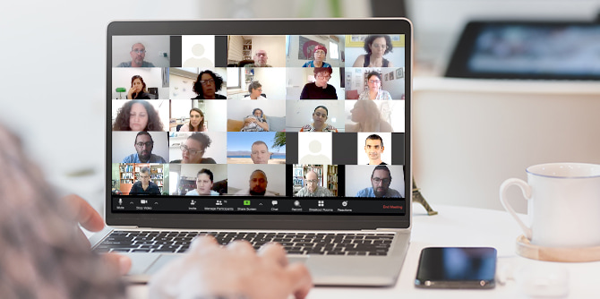

During the last two weeks of May, the Mandel Graduate Unit held a five-part series of workshops that focused on the occupational and digital changes that characterize today’s emerging and evolving labor market, partly as a result of the coronavirus crisis.
Dozens of graduates of the Mandel Foundation’s leadership programs participated in the series of workshops, which was held on Zoom, in accordance with current practice. The study sessions, which focused on both theoretical and practical aspects, were designed to help graduates develop the skills required today, in an age that poses many challenges but also offers many opportunities for personal growth and reinvention.
Gali Hacarmeli, lecturer, success coach, and executive branding expert, led two study sessions that focused on building a professional reputation, in order to advance the graduates’ missions and visions, and on methods for harnessing partners in an unstable work environment. The graduates learned ways to create their own unique employment value based on their professional strengths and expertise, in order to develop resilience in an unstable and rapidly changing employment market. Special emphasis was placed on the need for exposure – “put yourself front and center”– as a means for widening circles of impact and realizing one’s vision. The graduates also learned about creating valuable and interesting content for social media platforms, particularly Facebook, in order to develop meaningful connections with potential partners and successfully brand themselves as experts in their areas of interest or expertise. Throughout the sessions, the graduates discussed the subject and practiced use of the tools and skills.

Noa Epstein, CEO and founder of ApplicationShine.com and an expert consultant on career development processes and applying for competitive opportunities in the academic and professional world, also led two sessions. She focused on effective CV writing and on writing a text that provides a clear and concise professional profile that knocks out the competition. The sessions emphasized the importance of defining a “unique value proposition” based on the graduates’ “outstanding and unique assets” that makes candidates stand out and gives them a competitive edge. She also presented tools and rules for writing and structuring content in the most effective way.
The fifth study session, and the workshop that followed it, were led by
Ayelet Yudovich, a career development coach and an experienced HR manager, together with
Sharona Kadoshaey Bar-Nes, senior staff member of the Mandel Graduate Unit, who initiated and facilitated the entire series. Titled “What employers are looking for and how to influence a job interview,” the session presented tools for job interviews and self-presentation. This component of the series was designed to provide the graduates with full and comprehensive preparation for all aspects of job interviews, from content to body language and dress code. The graduates were given the opportunity to practice a mock interview for a position they are interested in, and received feedback from the session facilitators.
{kind=link}